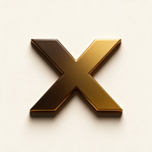

XPEAKNuevo filtro: el estilo de música que quieres para tu evento, a un toque.
Escuchamos las sesiones y revisamos, uno a uno, los trabajos que cada DJ muestra en su perfil. Para que quien contrata pueda fiarse de lo que ve.
Los DJs que empiezan pasan a la Cantera XPEAK y, cuando su nivel lo demuestra, al directorio.